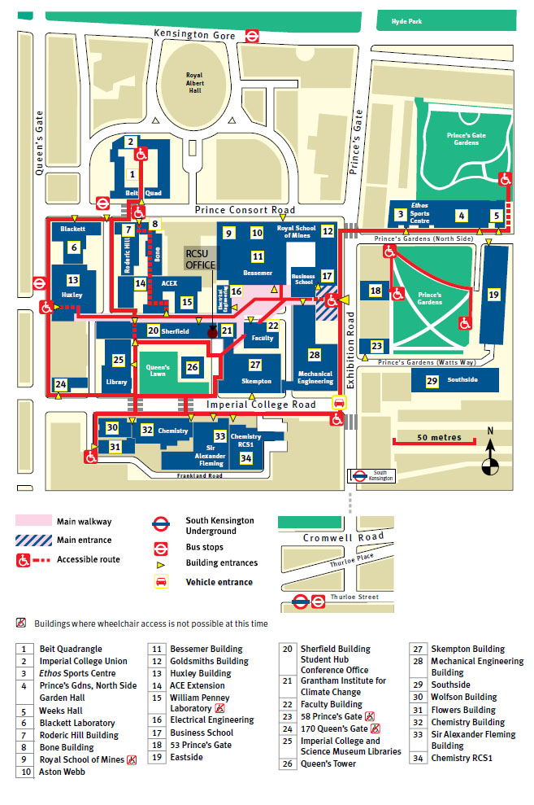
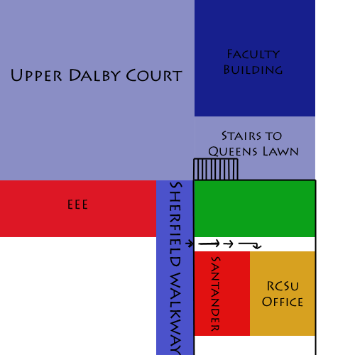

Welcome to the website for the Royal College of Science Union (RCSU). Within these pages you can find details of what we have done, what we will do and what we are here for. If you’re a Biologist, Biochemist, Chemist, Physicist, or Mathematician you have come to the right place to find out about your Faculty Union.
Freshers! Your RCSU Handbook is available here. (This is the version we sent for printing, but all content are accurate.)
The Royal College of Science Union, or RCSU for short, is the Constituent Union for the Faculty of Natural Sciences (FoNS) – if you’re a Biologist, Biochemist, Chemist, Physicist or Mathematician, you’re a member of the RCSU!
Since the founding of the Royal College of Science Union in 1881, we’ve been involved in student representation for all Science students, but that’s not all we do. We provide a wide range of services and opportunities for our members and all Imperial students.
The RCSU provides a wide range of services for our members, including:
We’re a constantly changing organisation with new things every year – if there’s something we don’t do, you can get involved with the RCSU and make something exciting happen!
Check out our Governing Documents – our Constitution, Regulations and Policies by which we run the whole organisation.
Also check out our meeting minutes and committee – these will give a much less dry picture of the stuff we do!
The RCSU has a great deal of traditions that are as long as the Union itself. These include singing of the traditional song, the kangela, and protecting our cherished mascot Theta. All Faculty Unions (FUs) are involved with a sport known as mascotry, where by the successful ‘theft’ of their mascot results in a forfeit for that Union.
We also have a mascot that cannot be stolen by the rival FUs, a Dennis N-Type fire engine called Jezebel. Jez is maintained by the RCS Motor Club and can often be seen at large events throughout the year.
The RCSU is responsible for all of the Science Departmental Societies at Imperial. Societies organise many events throughout the term and are there to look after the welfare and academic interests of their students. Students not studying ‘Maths’ for instance, can still be a part of ‘MathSoc’ – all Departmental Societies are open to others, it’s just that your membership is not automatic.
The RCSU committee is responsible for the running of the Union. The RCSU committee office is located off the Sherfield walkway at the entrance to the mechanical engineering building (between Santander and Upper Dalby Court), please see below for a map.
We are just on the walkway, second door next to Santander. If you came through some doors and saw a climbing wall, you hit the right spot! We are just opposite that wall. (If not try again)...
We welcome everyone with some warm tea.
 